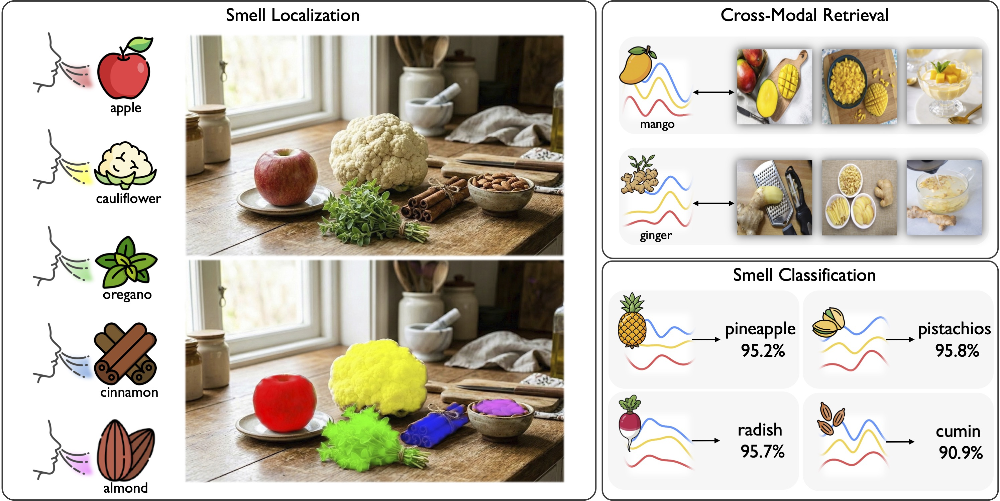
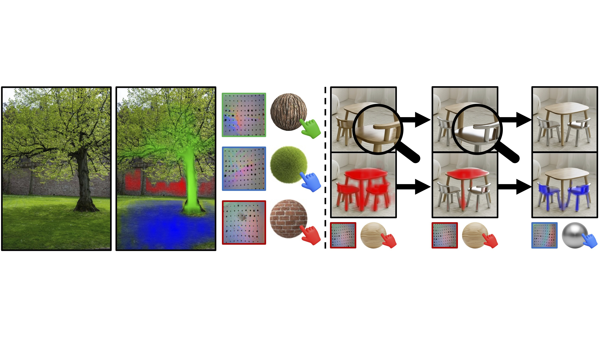
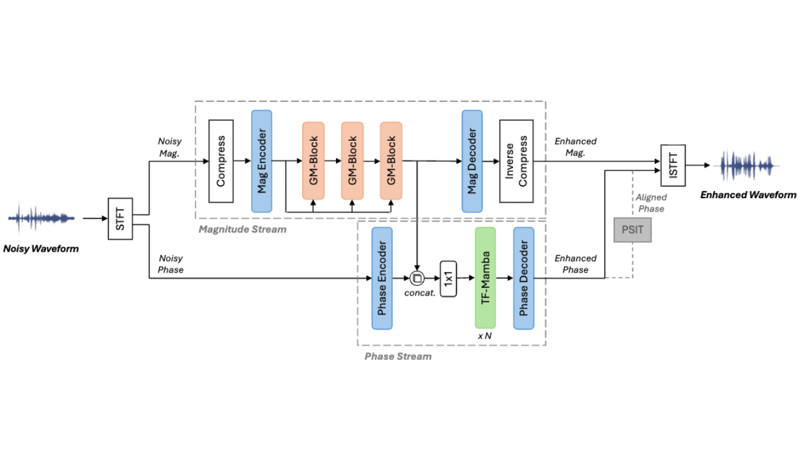
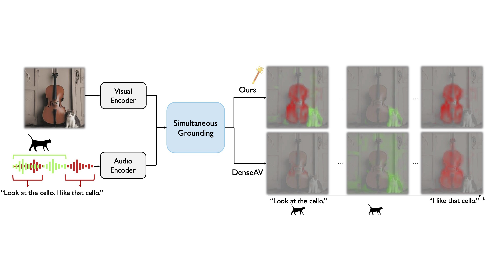

I'm an M.S./Ph.D. student at KAIST Multimodal AI Lab, advised by Professor Joon Son Chung. My research focuses on multimodal AI, with a particular interest in cross-modal alignment spanning diverse sensory modalities — including vision, audio and touch. I explore how self-supervised learning captures correspondences across modalities, aiming to connect and interpret multi-sensory information in real-world environments.
Advisor: Joon Son Chung
Deep Learning for Visual Understanding (EE40034)



